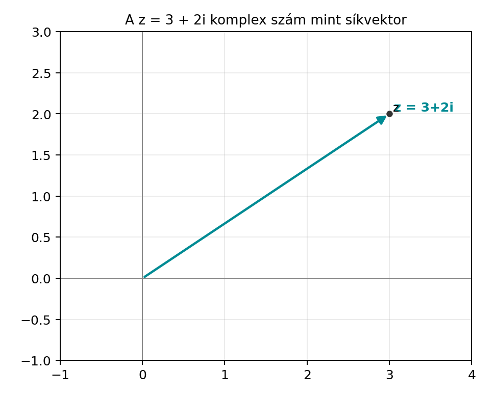

6.2 A komplex számsík: abszolút
érték, argumentum, trigonometrikus alak
A komplex számokkal eddig úgy dolgoztunk, mint algebrai
kifejezésekkel:
,
ahol
.
Ez az úgynevezett algebrai alak azonban önmagában nem
mutatja meg, hogy a komplex szám mennyire „nagy”, milyen irányba mutat,
és hogyan lehet vele a síkban forgatni. A valós alkalmazásokban –
például egy robotkar csuklójának elforgatásánál, egy váltakozó áramú jel
fázisánál vagy egy rezgés irányánál – éppen arra van szükségünk, hogy a
komplex számot a sík egy pontjaként, illetve vektoraként kezeljük. Ebben
az alfejezetben ezt a geometriai képet építjük fel.
6.2.1 A Gauss-sík és az összeadás
vektorként
A valós számokat a számegyenesen ábrázoljuk. A komplex számokhoz két
valós adat tartozik, ezért természetes módon a sík pontjaiként
ábrázolhatók.
Definíció. A komplex számsíkot vagy
Gauss-síkot úgy kapjuk, hogy a vízszintes tengelyen a
valós részt
,
a függőleges tengelyen a képzetes részt
ábrázoljuk. A vízszintes tengelyt valós tengelynek, a
függőlegest képzetes tengelynek nevezzük.
A
számnak tehát az
pont, illetve az origóból az
pontba mutató
helyvektor felel meg.

A z = 3 + 2i komplex szám mint síkvektor
- A vízszintes tengely a valós, a függőleges tengely a képzetes tengely.
Az origóból a z pontba mutató vektor hossza |z|, a pozitív valós
tengellyel bezárt szöge Arg z.
Az összeadás ebben a képben egyszerűen vektorösszeadás. Ha
és
,
akkor
tehát a megfelelő vektorok koordinátánként adódnak össze.
Geometriailag ez a paralelogramma-szabályt jelenti: a
és
vektorokból kifeszített paralelogramma átlója a
vektor.
Példa. A
és
összege
A
és
vektorok összege valóban
.
6.2.2 Abszolút érték és
távolság
A komplex szám hossza az origótól való távolság.
Definíció. A
komplex szám abszolút értéke (modulusa)
Ha
valós, azaz
,
akkor
,
ami a valós abszolút érték. A
tehát a valós abszolút érték természetes általánosítása. A konjugálttal
kifejezve:
hiszen
.
Két komplex szám távolságát a valós számegyenes távolságfogalmához
hasonlóan adjuk meg.
Definíció. A
és
komplex számok távolsága
Példa. Legyen
és
.
Ekkor
így
A távolságra vonatkozó legfontosabb becslés a
háromszög-egyenlőtlenség. A neve arra utal, hogy egy
háromszögben két oldal hosszának összege legalább akkora, mint a
harmadik oldal.
Tétel. Minden
esetén
Bizonyítási terv. A bal oldalt négyzetre emeljük, és
felhasználjuk, hogy bármely komplex szám valós része legfeljebb akkora,
mint az abszolút értéke. A négyzetre emelés itt azért engedhető meg,
mert mindkét oldal nemnegatív.
Bizonyítás. Írjuk fel a bal oldal négyzetét:
A konjugálás összegtartó, ezért
Mivel
,
a két középső tag összege
Így
Két segédállítást használunk. (a) Ha
,
akkor
.
(b)
(a
szabállyal), így
;
továbbá
,
azaz
.
Ezek alapján
Ebből
Mivel mindkét oldal nemnegatív, a négyzetgyökvonás megőrzi az
egyenlőtlenséget, tehát
∎
A tételből következik a gyakran használt fordított
háromszög-egyenlőtlenség is:
Ezt úgy kapjuk, hogy a háromszög-egyenlőtlenséget a
és a
felbontásokra alkalmazzuk.
6.2.3 Argumentum és főérték
A komplex szám hossza mellett az irányát is jellemeznünk kell. A
számnak az origóból húzott sugár és a pozitív valós tengely közötti
szöge az argumentum.
Definíció. Legyen
.
A
argumentuma az a
szög, amelyre
Az argumentum nem egyértelmű: ha
argumentum, akkor
is az, ahol
.
Ezért a
jelölés valójában egy halmazt jelöl:
A gyakorlatban azonban egyetlen, rögzített szöget szeretnénk
használni. Erre való a főérték.
Definíció. A
komplex szám argumentumának főértéke az az egyetlen
szög, amelyre
és
.
A főérték kiszámításához
esetén először ismernünk kell, hogy a pont melyik síknegyedben van. A
függvény értékkészlete
,
ezért önmagában nem elég: a bal félsíkban hozzá kell adni vagy ki kell
vonni
-t.
Számolási recept – a főérték meghatározása.
Legyen
,
.
Ha
:
Ha
és
:
Ha
és
:
Ha
és
:
.
Ha
és
:
.
A
szám argumentuma nem definiált.
A programozási nyelvekben ezt a kvadráns-érzékeny szöget gyakran az
atan2(y, x) függvény adja vissza; például Pythonban a
math.atan2(y, x) hívás. A math.atan2(y, x)
értéke a
zárt intervallumban van; a
főértéktől csak a negatív valós tengelyen tér el, ha
(például a math.atan2(-0.0, -1.0) értéke
,
míg a math.atan2(0.0, -1.0) értéke
).
Ilyenkor a
helyett
-t
kell venni.
Példa. Határozzuk meg
értékét a következő számokra.
:
itt
,
tehát
:
,
,
ezért
:
,
,
tehát
:
,
,
tehát
Figyeljünk arra, hogy a főérték
,
nem pedig
,
mert az intervallum a bal oldalon nyílt:
.
6.2.4 A trigonometrikus alak
A geometriai képből közvetlenül adódik a komplex szám másik fontos
felírása.
Definíció. A
komplex szám trigonometrikus alakja
ahol
és
.
Ha
a főérték, akkor
Az átírás lépései:
Számítsd ki
értékét.
Határozd meg
értékét a kvadránsok szerint.
Írd fel
alakot.
Ellenőrzésként számold vissza:
,
.
Példa. Írjuk át trigonometrikus alakba a
számot.
Először
:
A szám a második síknegyedben van, mert
,
.
Így
Tehát
Ellenőrzés:
és
,
így
ami valóban a kiindulási szám.
6.2.5 Szorzás és osztás
trigonometrikus alakban
A trigonometrikus alak egyik legfontosabb előnye, hogy a szorzás
geometriai jelentése világosan látszik: a hosszak összeszorzódnak, a
szögek pedig összeadódnak.
Tétel. Ha
akkor
Bizonyítás. Algebrai szorzással:
Bontsuk fel a zárójeleket:
Mivel
,
a valós és képzetes rész:
A szinusz és koszinusz addíciós tételei alapján
Így valóban
∎
Az osztás ennek megfordítása: ha
,
akkor
Geometriai értelmezés. A
szorzat abszolút értéke
,
tehát a
vektor hosszát a
hossza megnyújtja, irányát pedig a
argumentuma elforgatja. Különösen fontos az az eset, amikor
,
azaz
:
ekkor a szorzás tiszta forgatás
szöggel, hosszváltozás nélkül.
Figyelem. Az argumentumok összege
nem feltétlenül esik a
főérték-intervallumba. Ha főértéket kérdezünk, az összegből
-t
kell hozzáadni vagy kivonni, amíg a szög a megfelelő intervallumba nem
kerül.
Példa. Legyen
A szorzat:
mert
.
Ez a szög benne van a
intervallumban. A hányados:
6.2.7 Valós életbeli alkalmazás:
robotkar csuklójának forgatása komplex szorzással
Egy egyszerű síkbeli robotkart modellezhetünk úgy, hogy a csuklója az
origóban van, a kar pedig a pozitív valós tengely irányába mutat. Legyen
a kar hossza
méter, nyugalmi helyzetben a végpontja
azaz a
komplex szám. Ha a csuklót
szöggel elforgatjuk, akkor a kar végpontja a
egység hosszúságú komplex számmal való szorzás eredménye:
Legyen például a kar hossza
,
és a csuklót
-kal
forgatjuk el. Radiánban:
A végpont új koordinátái:
A végpont tehát körülbelül az
méter pontba kerül. Ellenőrzés: a távolság az origótól
tehát a kar hossza nem változott, ahogy egy merev kar esetén
elvárjuk.
A modell korlátai. Ez a modell síkbeli forgatást ír
le, és a csuklót az origóba helyezi. Ha a csukló egy
pontban van, akkor a forgatást a
képlettel kell elvégezni. Térbeli forgatásokhoz a komplex szorzás
önmagában nem elegendő; ott rotációs mátrixokat vagy kvaterniókat
használnak.
6.2.8 Tipikus hibák
A
és a
összekeverése. Az
halmaz, amely
szerint periodikus; a
egyetlen, rögzített szög a
intervallumban. Például
tartalmazza a
-t
és a
-t
is, de
.
Az argumentumot mindig
-ként
számolni. Ez csak a jobb félsíkban helyes. A
számra például
,
pedig a helyes főérték
,
mert a szám a harmadik síknegyedben van.
A szorzás után a főérték intervallumba vissza nem hozott
szög. Ha például
és
,
akkor az összeg
;
a szorzat főértéke
.
A trigonometrikus alakban mindkét szög ugyanazt a számot adja, de a
főérték egyértelmű.
A
argumentumának kiszámítása. A nullának nincs argumentuma, mert
a nullvektornak nincs iránya.
A távolság képletének hibás felírása. A
kiszámításakor a különbség valós és képzetes részét is négyzetre kell
emelni:
.
6.2.9 Önellenőrzés
Számítsd ki a
értéket.
Mennyi
?
Írd át trigonometrikus alakba a
számot a főértékkel.
Ha
és
,
mennyi
?
Igaz vagy hamis: ha
,
akkor a
-vel
való szorzás tiszta forgatás.
Milyen ponthalmazt ad meg a
feltétel?
A válaszokat a Megoldások elején találod, „Önellenőrzés – válaszok”
alcím alatt.
6.2.10 Feladatok
1. feladat (A). Add meg trigonometrikus alakban a
főértékkel a
komplex számot.
2. feladat (A). Írd vissza algebrai alakba a
számot.
3. feladat (B). Legyen
Számítsd ki trigonometrikus alakban a
és a
számot, majd írd vissza mindkét eredményt algebrai alakba. A szorzatnál
figyelj a főértékre.
4. feladat (B). Írd le, milyen alakzatot ad meg
a
halmaz, és add meg a középpontját és a sugarát.
5. feladat (C). Bizonyítsd be a fordított
háromszög-egyenlőtlenséget:
minden
esetén.
6. feladat (D). Egy síkbeli robotkar hossza
.
A csuklója az origóban van, és a kar nyugalmi helyzetben a pozitív valós
tengely irányába mutat. Forgasd el a kart
-kal.
Add meg a kar végpontjának koordinátáit, és ellenőrizd, hogy a kar
hossza nem változott.
6.2.11 Megoldások
6.2.11.1 Önellenőrzés –
válaszok
.
a második síknegyedben van. Így
.
esetén
,
és
,
tehát
.
,
így
.
Igaz. Ha
és
,
akkor
-vel
szorozva a hossz változatlan marad, a szög pedig
-val
nő.
A feltétel az
középpontú,
sugarú nyílt körlemez, mert
a körvonal belsejét jelenti.
1. feladat (A).
Először a hossz:
A pont
a második síknegyedben van, ezért
Így a trigonometrikus alak:
Ellenőrzés:
,
,
tehát
.
2. feladat (A).
A szögfüggvények értékei:
Ezért
3. feladat (B).
A szorzat:
Mivel
kívül esik a
intervallumon, a főérték:
Így a főértékkel:
Algebrai alakban használjuk, hogy
Ezért
A hányados:
Mivel
benne van a főérték intervallumban, ezt megtartjuk. Algebrai
alakban:
Tehát
4. feladat (B).
Mivel
,
a feltétel azt mondja, hogy
távolsága a
ponttól
.
Ezért a halmaz a
középpontú,
sugarú körvonal. A középpont koordinátája
.
5. feladat (C).
A háromszög-egyenlőtlenséget alkalmazzuk a
felbontásra:
Ebből
.
Hasonlóan a
felbontásból:
Ebből
.
A két egyenlőtlenség együtt azt adja, hogy
∎
6. feladat (D).
A forgatást a
egységnyi hosszúságú komplex számmal való szorzás adja. A kar hossza
,
tehát a végpont:
Mivel
ezért
A koordináták tehát:
Ellenőrzés: a végpont távolsága az origótól
tehát a kar hossza valóban változatlan.
6.2.12 Rövid összefoglaló
A komplex számsíkban a
számot az
pont, illetve az origóból a pontba mutató vektor reprezentálja. Az
abszolút érték
az origótól mért távolság, a
a két komplex szám távolsága. Fennáll a háromszög-egyenlőtlenség:
,
valamint a fordított alak is:
.
Az argumentum
a pozitív valós tengellyel bezárt szög, amely
szerint periodikus; a főérték
.
A trigonometrikus alak
,
ahol
.
Szorzáskor a hosszak összeszorzódnak, a szögek összeadódnak:
;
osztáskor a hosszak osztódnak, a szögek kivonódnak. A
halmaz nyílt körlemez, a
a jobb félsík.